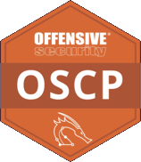
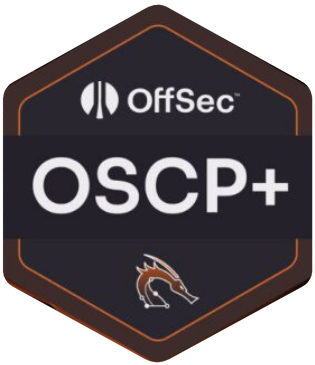
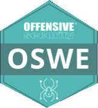
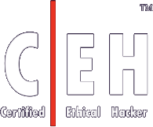
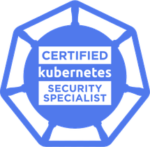
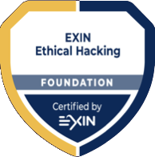

Offensive Security
Pentest (teste de invasão)Encontramos falhas em aplicações, APIs, redes e ambientes corporativos, simulando um ataque real.
Segurança ofensiva · Cloud · DevSecOps · Awareness
Identificamos vulnerabilidades reais, traduzimos riscos em prioridades e ajudamos sua empresa a proteger o que mais importa.
Serviços
Do teste de invasão à conscientização do time, cada serviço termina com recomendações práticas e priorizadas.
Encontramos falhas em aplicações, APIs, redes e ambientes corporativos, simulando um ataque real.
Revisamos configurações, acessos e permissões em AWS e Azure para fechar brechas.
Integramos testes e boas práticas de segurança ao processo e às pipelines de desenvolvimento.
Treinamos pessoas e criamos campanhas para reduzir o risco de golpes e erros humanos.
Como trabalhamos
Seu time técnico recebe as evidências e o passo a passo para corrigir. A liderança recebe os riscos em ordem de prioridade.
Definição de objetivos, ativos, limites e regras de execução.
Testes e exploração controlada, dentro do escopo aprovado.
Achados classificados por criticidade e impacto no negócio.
Relatório técnico com evidências, relatório executivo e reunião de apresentação.
Validação das correções e orientação sobre os próximos passos.
Quem somos
A GNOSIS Security reúne profissionais de segurança ofensiva, segurança em nuvem e desenvolvimento seguro.
O time tem certificações da OffSec, EC-Council, Microsoft, Linux Foundation e EXIN, entre elas OSCP, OSWE e CEH.

OSCP
OSCP+
OSWE
CEH
CKS
EXIN Ethical HackingPerguntas frequentes
Se a sua dúvida não estiver aqui, fale com a equipe. A conversa inicial ajuda a identificar o escopo mais adequado.
Aplicações, APIs, redes, serviços expostos, configurações, acessos e outros ativos definidos no escopo aprovado.
Os testes seguem regras de execução, janela acordada e controles de segurança para reduzir o risco operacional.
O valor depende do escopo: quantidade de aplicações, APIs ou endereços, tipo de teste e prazo. Depois de uma conversa inicial, enviamos uma proposta com escopo, prazo e valor.
Depende do tamanho do ambiente e do tipo de teste. O prazo de execução e de entrega dos relatórios fica definido na proposta, junto com a janela de testes.
Avaliamos postura, configurações, acessos, permissões e controles em ambientes como AWS e Azure.
Próximo passo
Conte o seu objetivo, o ambiente envolvido e a urgência. A GNOSIS ajuda a organizar o ponto de partida.